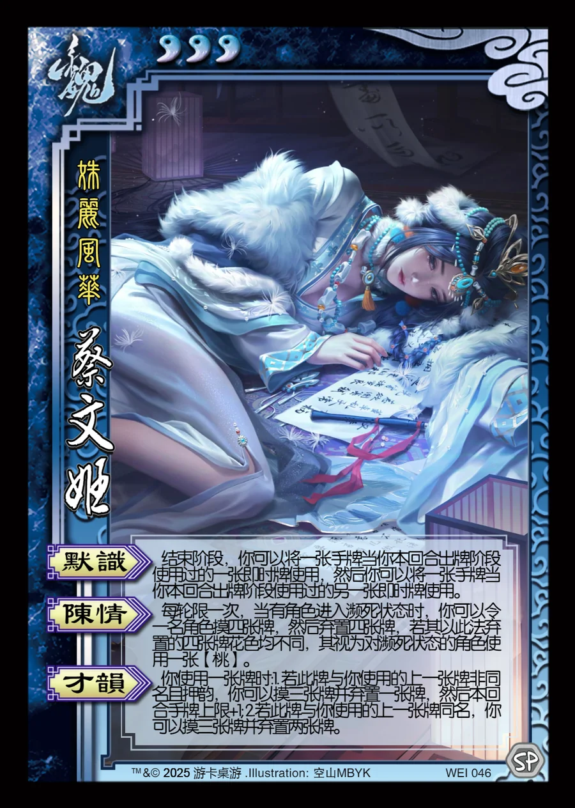

点击卡面查看大图
魏
魏蔡文姬
♥3姝丽风华
默识
结束阶段，你可以将一张手牌当你本回合出牌阶段使用过的一张即时牌使用，然后你可以将一张手牌当你本回合出牌阶段使用过的另一张即时牌使用。
陈情
每轮限一次，当有角色进入濒死状态时，你可以令一名角色摸四张牌，然后弃置四张牌，若其以此法弃置的四张牌花色均不同，其视为对濒死状态的角色使用一张【桃】。
才韵
你使用一张牌时:1. 若此牌与你使用的上一张牌非同名且押韵，你可以摸三张牌并弃置一张牌，然后本回合手牌上限+1; 2.若此牌与你使用的上一张牌同名，你可以摸三张牌并弃置两张牌。